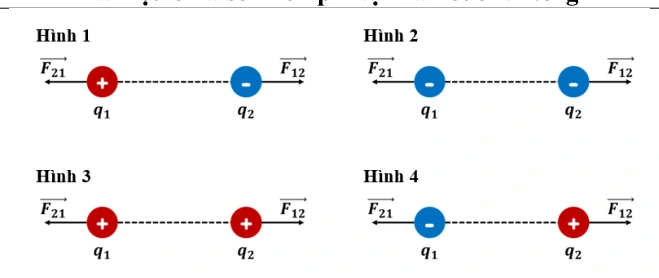
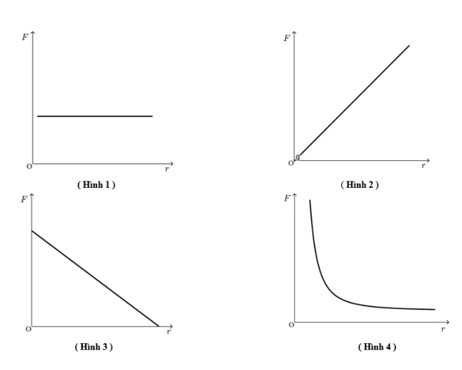

Bài tập — Bài 2 — Định luật Coulomb
Phần A — Trắc nghiệm 4 lựa chọn
Bài 1 — Mức 1 — Nhận biết
Hai điện tích điểm \(q_1=2\,\mu\,\mathrm C\), \(q_2=3\,\mu\,\mathrm C\) cách nhau \(0,30\,\mathrm m\) trong chân không. Lấy \(k=9\cdot10^9\). Lực Coulomb có độ lớn
A. \(0,2\,\mathrm N\).
B. \(0,4\,\mathrm N\).
C. \(0,6\,\mathrm N\).
D. \(1,8\,\mathrm N\).
Đáp án và lời giải
Chọn C. \(F=kq_1q_2/r^2=9\cdot10^9\cdot6\cdot10^{-12}/0,09=0,6\,\mathrm N\).
Bài 2 — Mức 1 — Nhận biết
Nếu khoảng cách giữa hai điện tích điểm tăng 3 lần, các điện tích không đổi, lực Coulomb
A. tăng 3 lần.
B. giảm 3 lần.
C. giảm 9 lần.
D. tăng 9 lần.
Đáp án và lời giải
Chọn C vì \(F\propto1/r^2\).
Bài 3 — Mức 1 — Nhận biết
Hai điện tích cùng dấu đặt gần nhau sẽ
A. hút nhau.
B. đẩy nhau.
C. không tương tác.
D. chỉ tương tác nếu cùng độ lớn.
Đáp án và lời giải
Chọn B. Hai điện tích cùng dấu đẩy nhau; hai điện tích trái dấu hút nhau.
Bài 4 — Mức 1 — Nhận biết
Trong điện môi có hằng số điện môi tương đối \(\varepsilon_r=4\), lực giữa hai điện tích so với chân không giảm
A. 2 lần.
B. 4 lần.
C. 8 lần.
D. 16 lần.
Đáp án và lời giải
Chọn B trong mô hình \(F=F_0/\varepsilon_r\).
Phần B — Đúng/Sai
Bài 5 — Mức 2 — Thông hiểu
Về lực Coulomb giữa hai điện tích điểm:
a) Hai lực tác dụng lên hai điện tích có cùng độ lớn và ngược hướng.
b) Lực nằm trên đường thẳng nối hai điện tích.
c) Độ lớn tỉ lệ với tích độ lớn hai điện tích.
d) Đổi đồng thời dấu cả hai điện tích làm độ lớn lực thay đổi.
Đáp án và lời giải
a) Đúng. Theo định luật Coulomb kết hợp định luật III Newton, hai điện tích tác dụng lên nhau bằng hai lực cùng phương, cùng độ lớn và ngược chiều.
b) Đúng. Lực Coulomb giữa hai điện tích điểm có phương trùng với đường thẳng nối vị trí của chúng.
c) Đúng. Từ \(F=k|q_1q_2|/r^2\), với \(r\) cố định thì \(F\propto|q_1q_2|\).
d) Sai. tích độ lớn không đổi; tính hút/đẩy cũng không đổi vì quan hệ cùng dấu/trái dấu giữ nguyên.
Bài 6 — Mức 2 — Thông hiểu
Hai điện tích điểm cách nhau \(r\):
a) Nếu một điện tích tăng 2 lần thì lực tăng 2 lần.
b) Nếu cả hai điện tích tăng 2 lần thì lực tăng 4 lần.
c) Nếu \(r\) giảm một nửa thì lực tăng 2 lần.
d) Nếu \(r\) giảm một nửa thì lực tăng 4 lần.
Đáp án và lời giải
a) Đúng. Từ \(F=k|q_1q_2|/r^2\), giữ các đại lượng khác không đổi thì lực tỉ lệ bậc nhất với mỗi điện tích.
b) Đúng. Tích \(|q_1q_2|\) tăng \(2\times2=4\) lần nên lực Coulomb tăng \(4\) lần.
c) Sai. Vì \(F\propto1/r^2\), thay \(r\) bằng \(r/2\) làm lực tăng \(4\) lần, không phải \(2\) lần.
d) Đúng. Từ \(F\propto1/r^2\), ta có \(F\prime/F=(r/(r/2))^2=4\).
Phần C — Trả lời ngắn
Bài 7 — Mức 3 — Vận dụng
Hai điện tích \(+4\,\mu\,\mathrm C\) và \(-5\,\mu\,\mathrm C\) cách nhau \(20\,\mathrm{cm}\) trong chân không. Tính độ lớn lực và cho biết hút hay đẩy.
Đáp án và lời giải
\(F=9\cdot10^9\cdot(4\cdot10^{-6})(5\cdot10^{-6})/0,20^2=4,5\,\mathrm N\). Hai điện tích trái dấu nên hút nhau.
Bài 8 — Mức 3 — Vận dụng
Hai điện tích bằng nhau đặt cách nhau \(10\,\mathrm{cm}\) trong chân không đẩy nhau lực \(0,90\,\mathrm N\). Tính độ lớn mỗi điện tích.
Đáp án và lời giải
\(F=kq^2/r^2\) nên \(q=\sqrt{Fr^2/k}=\sqrt{0,90\cdot0,10^2/(9\cdot10^9)}=10^{-6}\,\mathrm C\) \(=1\,\mu\,\mathrm C\).
Bài 9 — Mức 3 — Vận dụng
Lực giữa hai điện tích trong chân không là \(1,2\,\mathrm N\). Đưa nguyên hệ vào điện môi, giữ khoảng cách, lực còn \(0,30\,\mathrm N\). Tính hằng số điện môi tương đối.
Đáp án và lời giải
\(F=F_0/\varepsilon_r\) nên \(\varepsilon_r=1,2/0,30=4\).
Phần D — Vận dụng và vận dụng cao
Bài 10 — Mức 4 — Vận dụng cao
Ba điện tích đặt thẳng hàng: \(q_A=+2\,\mu\,\mathrm C\) tại A, \(q_B=+1\,\mu\,\mathrm C\) tại B, \(q_C=-4\,\mu\,\mathrm C\) tại C. Biết \(AB=0,20\,\mathrm m\), BC=\(0,30\,\mathrm m\). Tính lực tổng hợp tác dụng lên \(q_B\) trong chân không.
Đáp án và lời giải
Lực của A lên B: cùng dấu nên đẩy B sang phải.
\(F_{AB}=k|q_Aq_B|/AB^2=9\cdot10^9\cdot2\cdot10^{-12}/0,04=0,45\,\mathrm N\).
Lực của C lên B: trái dấu nên hút B về C, cũng sang phải.
\(F_{CB}=9\cdot10^9\cdot4\cdot10^{-12}/0,09=0,40\,\mathrm N\).
Hai lực cùng chiều nên \(F=0,45+0,40=0,85\,\mathrm N\), hướng từ B về C.
Ngân hàng bài tập mở rộng
Nhận biết — Trả lời ngắn
Bài 11
Nếu khoảng cách giữa hai điện tích điểm tăng lên 2 lần và giá trị của mỗi điện tích điểm tăng lên 3 lần thì lực điện tương tác giữa chúng tăng hay giảm bao nhiêu lần?
Đáp án và lời giải
Đáp án: \(2{,}25\) lần
Hướng dẫn giải:
Vì \(F\propto |q_1q_2|/r^2\), khi mỗi điện tích tăng 3 lần và khoảng cách tăng 2 lần thì \(F'/F=(3\cdot3)/2^2=9/4=2{,}25\). Lực tăng \(2{,}25\) lần.
Bài 12
Cho hai điện tích điểm, mỗi điện tích có độ lớn \(1\,\mathrm{nC}\) được đặt cách nhau \(4,0\,\mathrm{cm}\) trong chân không. Lực điện tương tác giữa hai điện tích này có độ lớn là bao nhiêu (tính theo đơn vị \(\mu\mathrm N\) và làm tròn đến chữ số thập phân thứ nhất sau dấu phẩy)?
Đáp án và lời giải
Đáp án: \(5{,}6\,\mu\mathrm N\)
Hướng dẫn giải:
Với \(q_1=q_2=1\,\mathrm{nC}\) và \(r=0{,}040\,\mathrm m\), \(F=9\cdot10^9(10^{-9})^2/(0{,}040)^2=5{,}625\cdot10^{-6}\,\mathrm N\approx5{,}6\,\mu\mathrm N\).
Bài 13
Hai điện tích điểm \(q_1=15\,\mu\mathrm C\) và \(q_2=-6\,\mu\mathrm C\) đặt cách nhau \(0{,}2\,\mathrm m\) trong không khí. Phải đặt một điện tích \(q_3\) ở vị trí cách \(q_1\) bao nhiêu mét để lực điện do \(q_1\), \(q_2\) tác dụng lên điện tích này bằng 0? Làm tròn đến chữ số thập phân thứ hai sau dấu phẩy.
Đáp án và lời giải
Đáp án: \(0{,}54\,\mathrm m\)
Hướng dẫn giải:
Hai điện tích trái dấu nên điểm triệt tiêu nằm ngoài đoạn AB, về phía điện tích có độ lớn nhỏ hơn \(|q_2|=6\,\mu\mathrm C\). Gọi \(x\) là khoảng cách từ \(q_1\) đến điểm đó (\(x>0{,}20\,\mathrm m\)): \(15/x^2=6/(x-0{,}20)^2\). Suy ra \(x\approx0{,}544\,\mathrm m\), làm tròn \(0{,}54\,\mathrm m\).
Bài 14
Một phân tử ADN gồm hai nhánh xoắn kép liên kết với nhau có chiều dài \(0{,}459\cdot10^{-6}\,\mathrm m\). Phần đuôi của phân tử có thể bị ion hóa mang điện tích âm \(q_1=-1{,}6\cdot10^{-19}\,\mathrm C\), đầu còn lại mang điện tích dương \(q_2=1{,}6\cdot10^{-19}\,\mathrm C\). Phân tử xoắn ốc này hoạt động như một lò xo và bị nén \(1\%\) sau khi bị tích điện. Biết phân tử ADN trong nhân tế bào và môi trường xung quanh là nước, hằng số điện môi của nước là \(81\). Tính “độ cứng \(k\)” của phân tử (theo đơn vị nN/m và làm tròn đến hai chữ số thập phân).
Đáp án và lời giải
Đáp án: \(3{,}00\,\mathrm{nN/m}\).
Hướng dẫn giải:
Gọi \(l_0=0{,}459\cdot10^{-6}\,\mathrm m\). Phân tử bị nén \(1\%\) nên độ nén là \(\Delta l=0{,}01l_0\) và khoảng cách hai đầu ở trạng thái cân bằng là \(r=0{,}99l_0\).
Lực hút Coulomb ở trạng thái này: \(F_e=9\cdot10^9\dfrac{(1{,}6\cdot10^{-19})^2}{81(0{,}99l_0)^2}\approx1{,}38\cdot10^{-17}\,\mathrm N\).
Ở cân bằng, lực đàn hồi cân bằng lực điện: \(k\Delta l=F_e\). Suy ra \(k=\dfrac{F_e}{0{,}01l_0}\approx3{,}00\cdot10^{-9}\,\mathrm{N/m}=3{,}00\,\mathrm{nN/m}\).
Bài 15
Hai vật tích điện giống hệt nhau tác dụng lên nhau một lực \(2{,}0\cdot10^{-2}\,\mathrm N\) khi được đặt cách nhau \(34\,\mathrm{cm}\) trong không khí. Độ lớn điện tích của mỗi vật là bao nhiêu \(\mu\mathrm C\)? Làm tròn đến chữ số thập phân thứ nhất.
Đáp án và lời giải
Đáp án: \(0{,}5\,\mu\mathrm C\)
Hướng dẫn giải:
Hai vật có điện tích cùng độ lớn \(q\), nên \(F=kq^2/r^2\). Do đó \(q=\sqrt{Fr^2/k}=\sqrt{2{,}0\cdot10^{-2}(0{,}34)^2/(9\cdot10^9)}\approx5{,}07\cdot10^{-7}\,\mathrm C=0{,}507\,\mu\mathrm C\), làm tròn \(0{,}5\,\mu\mathrm C\).
Bài 16
Hai quả cầu kim loại nhỏ, giống hệt nhau, mang điện tích \(2Q\) và \(-Q\) được đặt cách nhau một khoảng \(r\), lực điện tác dụng lên nhau có độ lớn là \(F\). Nối chúng bằng một dây dẫn điện rồi bỏ dây dẫn đi. Sau khi bỏ dây nối, hai quả cầu tác dụng lên nhau một lực điện \(F'\). Tỉ số \(\dfrac{F}{F'}\) bằng bao nhiêu?
Đáp án và lời giải
Đáp án: \(8\)
Hướng dẫn giải:
Ban đầu \(F=2kQ^2/r^2\). Sau khi nối hai quả cầu giống nhau, tổng điện tích là \(Q\) nên mỗi quả cầu nhận \(Q/2\); vì vậy \(F'=k(Q/2)^2/r^2=kQ^2/(4r^2)\). Suy ra \(F/F'=8\).
Bài 17
Hai điện tích điểm \(q_1=8\cdot10^{-8}\,\mathrm C\) và \(q_2=-3\cdot10^{-8}\,\mathrm C\) đặt trong không khí tại A và B cách nhau \(3\,\mathrm{cm}\). Đặt điện tích \(q_0=10^{-8}\,\mathrm C\) tại M là trung điểm của AB. Lực tĩnh điện tổng hợp do \(q_1\) và \(q_2\) tác dụng lên \(q_0\) là bao nhiêu (theo đơn vị N và làm tròn đến hai chữ số thập phân)?
Đáp án và lời giải
Đáp án: \(0{,}04\,\mathrm N\).
Hướng dẫn giải:
Vì \(M\) là trung điểm nên \(r=1{,}5\,\mathrm{cm}=0{,}015\,\mathrm m\). Hai lực tác dụng lên \(q_0\) cùng hướng từ A về B, do đó \(F=\dfrac{k|q_0|(|q_1|+|q_2|)}{r^2}=\dfrac{9\cdot10^9\cdot10^{-8}\cdot11\cdot10^{-8}}{0{,}015^2}=0{,}044\,\mathrm N\approx0{,}04\,\mathrm N\).
Bài 18
Hai điện tích \(q_1=4\cdot10^{-8}\,\mathrm C\), \(q_2=-4\cdot10^{-8}\,\mathrm C\) đặt tại A và B cách nhau \(4\,\mathrm{cm}\) trong rượu có hằng số điện môi \(\varepsilon=27\). Lực tác dụng lên điện tích \(q_0=2\cdot10^{-9}\,\mathrm C\) đặt tại M, với \(MA=4\,\mathrm{cm}\) và \(MB=8\,\mathrm{cm}\), bằng bao nhiêu \(\mu\mathrm N\)?
Đáp án và lời giải
Đáp án: \(12{,}5\,\mu\mathrm N\)
Hướng dẫn giải:
Vì \(MA=4\,\mathrm{cm}\), \(MB=8\,\mathrm{cm}\) và \(AB=4\,\mathrm{cm}\), M nằm ngoài đoạn AB về phía A. Lực do \(q_1>0\) đẩy \(q_0>0\) và lực do \(q_2<0\) hút \(q_0\) ngược chiều nhau. Tính được \(F_1\approx16{,}67\,\mu\mathrm N\), \(F_2\approx4{,}17\,\mu\mathrm N\), nên \(F=|F_1-F_2|=12{,}5\,\mu\mathrm N\).
Bài 19
Hai điện tích điểm \(q_1,q_2\) được giữ cố định tại A, B cách nhau một khoảng \(a\) trong một điện môi. Điện tích \(q_3\) đặt tại C trên đoạn AB, cách A một khoảng \(a/3\). Để điện tích \(q_3\) đứng yên thì độ lớn điện tích \(q_2\) phải bằng bao nhiêu lần độ lớn \(q_1\)?
Đáp án và lời giải
Đáp án: \(4\).
Hướng dẫn giải:
Vì C nằm giữa A và B, để hai lực tác dụng lên \(q_3\) ngược chiều thì \(q_1\) và \(q_2\) phải cùng dấu. Khi đó điều kiện cân bằng là \(\dfrac{k|q_1q_3|}{(a/3)^2}=\dfrac{k|q_2q_3|}{(2a/3)^2}\Rightarrow|q_2|=4|q_1|\).
Nhận biết — Trắc nghiệm 4 lựa chọn
Bài 20
Lực mà hai điện tích tác dụng lên nhau tuân theo định luật
A. Ohm.
B. Hooke.
C. Coulomb.
D. bảo toàn và chuyển hoá năng lượng.
Đáp án và lời giải
Đáp án: C
Hướng dẫn giải:
Lực tương tác tĩnh điện giữa hai điện tích điểm đứng yên được mô tả bởi định luật Coulomb. Chọn C.
Bài 21
Có bao nhiêu nhận định sau đây là đúng? Lực điện tương tác giữa các điện tích điểm có
(I) phương trùng với đường thẳng nối hai điện tích điểm
(II) độ lớn tỉ lệ thuận với tổng giá trị của hai điện tích điểm
(III) độ lớn tỉ lệ nghịch với khoảng cách giữa chúng.
A. 0.
B. 1.
C. 2.
D. 3.
Đáp án và lời giải
Đáp án: B
Hướng dẫn giải:
(I) Đúng (II) Sai. → độ lớn tỉ lệ thuận với tích giá trị của hai điện tích điểm. (III) Sai. → độ lớn tỉ lệ nghịch với bình phương khoảng cách giữa chúng.
Bài 22
Vector lực tĩnh điện giữa hai điện tích điểm có tính chất nào sau đây?
A. Có giá trùng với đường thẳng nối hai điện tích.
B. Có chiều phụ thuộc vào độ lớn của các hạt mang điện.
C. Độ lớn chỉ phụ thuộc vào khoảng cách giữa hai điện tích.
D. Chiều phụ thuộc vào độ lớn của các hạt mang điện tích.
Đáp án và lời giải
Đáp án: A
Hướng dẫn giải:
Lực Coulomb giữa hai điện tích điểm có giá trùng với đường thẳng nối hai điện tích. Chọn A.
Bài 23
Bao nhiêu hình sau đây biểu diễn không chính xác lực tương tác tĩnh điện giữa các điện tích (có cùng độ lớn điện tích và đứng yên)?

A. 1.
B. 2.
C. 3.
D. 4.
Đáp án và lời giải
Đáp án: B
Hướng dẫn giải:
Hình 1 và hình 4 biểu diễn sai chiều lực tương tác. Hai điện tích trái dấu hút nhau, cùng dấu đẩy nhau; vì vậy có 2 hình không chính xác.
Bài 24
Xét ba điện tích \(q_0,q_1,q_2\) đặt tại ba điểm khác nhau trong không gian. Biết lực do \(q_1\) và \(q_2\) tác dụng lên \(q_0\) lần lượt là \(\vec F_{10}\) và \(\vec F_{20}\). Biểu thức nào sau đây xác định đúng lực tĩnh điện tổng hợp tác dụng lên điện tích \(q_0\)?
A. \(F_0=F_{10}+F_{20}\).
B. \(\vec F_0=\vec F_{10}+\vec F_{20}\).
C. \(F_0=F_{10}-F_{20}\).
D. \(\vec F_0=\vec F_{10}-\vec F_{20}\).
Đáp án và lời giải
Đáp án: B.
Hướng dẫn giải:
Lực điện tuân theo nguyên lí chồng chất, nên lực tổng hợp tác dụng lên \(q_0\) là tổng vectơ: \(\vec F_0=\vec F_{10}+\vec F_{20}\).
Bài 25
Độ lớn của lực tương tác giữa hai điện tích điểm trong không khí tỉ lệ
A. với bình phương khoảng cách giữa hai điện tích.
B. với khoảng cách giữa hai điện tích.
C. nghịch với bình phương khoảng cách giữa hai điện tích.
D. nghịch với khoảng cách giữa hai điện tích.
Đáp án và lời giải
Đáp án: C
Hướng dẫn giải:
Giữ các điện tích và môi trường không đổi, \(F\propto1/r^2\). Vì vậy phát biểu lực tỉ lệ nghịch với bình phương khoảng cách là đúng. Chọn C.
Bài 26
Nếu đưa vật A lại gần vật B mang điện dương thì vật A bị vật B hút. Phát biểu nào sau đây là đúng về vật A?
A. Vật A không mang điện.
B. Vật A mang điện âm.
C. Vật A mang điện dương.
D. Vật A có thể mang điện hoặc trung hoà.
Đáp án và lời giải
Đáp án: D
Hướng dẫn giải:
Vật B mang điện dương có thể hút một vật A mang điện âm, nhưng cũng có thể hút vật A trung hòa do hiện tượng phân cực điện. Vì vậy từ hiện tượng hút không thể khẳng định A mang điện âm; A có thể mang điện hoặc trung hòa. Chọn D.
Bài 27
Điện tích điểm là vật
A. có kích thước rất nhỏ.
B. có kích thước rất lớn.
C. mang điện có kích thước rất nhỏ.
D. mang rất ít điện tích.
Đáp án và lời giải
Đáp án: C
Hướng dẫn giải:
Điện tích điểm là vật mang điện có kích thước rất nhỏ so với các khoảng cách đặc trưng trong bài toán. Chọn C.
Bài 28
Lực tương tác giữa hai điện tích đứng yên trong điện môi đồng chất, có hằng số điện môi \(\varepsilon\) thì
A. tăng \(\varepsilon\) lần so với trong chân không.
B. giảm \(\varepsilon\) lần so với trong chân không.
C. giảm \(\varepsilon^2\) lần so với trong chân không.
D. tăng \(\varepsilon^2\) lần so với trong chân không.
Đáp án và lời giải
Đáp án: B
Hướng dẫn giải:
Trong điện môi đồng chất, \(F=F_0/\varepsilon\), nên lực giảm \(\varepsilon\) lần so với trong chân không. Chọn B.
Bài 29
Xét hai điện tích điểm \(q_1\) và \(q_2\) có tương tác đẩy. Khẳng định nào sau đây đúng?
A. \(q_1>0,\ q_2<0\).
B. \(q_1<0,\ q_2>0\).
C. \(q_1q_2>0\).
D. \(q_1q_2<0\).
Đáp án và lời giải
Đáp án: C
Hướng dẫn giải:
Hai điện tích đẩy nhau khi chúng cùng dấu. Vì vậy tích của hai điện tích dương:
Bài 30
Công thức nào dưới đây xác định độ lớn lực tương tác tĩnh điện giữa hai điện tích điểm \(q_1,q_2\) đặt cách nhau một khoảng \(r\) trong chân không, với \(k=9\cdot10^9\,\mathrm{N\,m^2/C^2}\) là hằng số Coulomb?
A. \(F=\dfrac{r^2}{k|q_1q_2|}\).
B. \(F=\dfrac{r^2|q_1q_2|}{k}\).
C. \(F=k\dfrac{|q_1q_2|}{r^2}\).
D. \(F=\dfrac{|q_1q_2|}{kr^2}\).
Đáp án và lời giải
Đáp án: C.
Hướng dẫn giải:
Trong chân không, độ lớn lực Coulomb là \(F=k\dfrac{|q_1q_2|}{r^2}\).
Bài 31
Khẳng định nào sau đây không đúng khi nói về lực tương tác giữa hai điện tích điểm trong chân không?
A. Có phương là đường thẳng nối giữa hai điện tích.
B. Có độ lớn tỉ lệ với tích độ lớn hai điện tích.
C. Có độ lớn tỉ lệ nghịch với bình phương khoảng cách giữa hai điện tích.
D. Là lực hút khi hai điện tích cùng dấu.
Đáp án và lời giải
Đáp án: D
Hướng dẫn giải:
Theo định luật Coulomb, lực có phương trùng đường thẳng nối hai điện tích, độ lớn tỉ lệ với \(|q_1q_2|\) và tỉ lệ nghịch với \(r^2\). Hai điện tích cùng dấu phải đẩy nhau, nên D là phát biểu không đúng duy nhất.
Bài 32
Cho 2 điện tích có độ lớn không đổi, đặt cách nhau một khoảng không đổi. Lực tương tác giữa chúng sẽ lớn nhất khi đặt trong
A. chân không.
B. nước nguyên chất.
C. dầu hỏa.
D. không khí ở điều kiện tiêu chuẩn.
Đáp án và lời giải
Đáp án: A
Hướng dẫn giải:
Với điện tích và khoảng cách cố định, \(F\propto1/\varepsilon\). Chân không có \(\varepsilon=1\) nhỏ nhất trong các môi trường nêu, nên lực lớn nhất trong chân không. Chọn A.
Bài 33
Tăng đồng thời độ lớn của hai điện tích điểm và khoảng cách giữa chúng lên gấp đôi thì lực điện tác dụng giữa chúng
A. tăng lên 2 lần.
B. giảm đi 2 lần.
C. giảm đi 4 lần.
D. không đổi.
Đáp án và lời giải
Đáp án: D
Hướng dẫn giải:
Nếu cả hai điện tích cùng tăng 2 lần thì \(|q_1q_2|\) tăng 4 lần; nếu khoảng cách cũng tăng 2 lần thì \(r^2\) tăng 4 lần. Hai hệ số triệt tiêu nên lực không đổi. Chọn D.
Bài 34
Hai điện tích điểm đặt cách nhau một khoảng r, dịch chuyển để khoảng cách giữa hai điện tích điểm đó giảm đi 2 lần nhưng vẫn giữ nguyên độ lớn điện tích của chúng. Khi đó, lực tương tác giữa hai điện tích
A. tăng lên 2 lần.
B. giảm đi 2 lần.
C. tăng lên 4 lần.
D. giảm đi 4 lần.
Đáp án và lời giải
Đáp án: C
Hướng dẫn giải:
Lực tương tác giữa hai điện tích tỉ lệ nghịch với bình phương khoảng cách nên khi khoảng cách giữa hai điện tích điểm đó giảm đi 2 lần thì lực tương tác tăng 4 lần.
Bài 35
Hai điện tích điểm khi đặt trong không khí chúng hút nhau bằng lực F, khi đưa chúng vào trong dầu có hằng số điện môi bằng 2 thì lực tương tác giữa chúng là
A. F.
B. \(2\,\mathrm F\).
C. \(0,5\,\mathrm F\).
D. \(0,25\,\mathrm F\).
Đáp án và lời giải
Đáp án: C
Hướng dẫn giải:
Khi đưa hai điện tích điểm vào trong dầu có hằng số điện môi bằng 2 thì lực tương tác giữa chúng giảm 2 lần so với khi đặt trong không khí.
Bài 36
Hai điện tích điểm đặt cách nhau \(20\,\mathrm{cm}\) trong không khí, tác dụng lên nhau một lực nào đó. Hỏi phải đặt hai điện tích trên cách nhau bao nhiêu ở trong dầu để lực tương tác giữa chúng vẫn như cũ, biết rằng hằng số điện môi của dầu bằng 5.
A. \(0,894\,\mathrm{cm}\).
B. \(8,94\,\mathrm{cm}\).
C. \(9,94\,\mathrm{cm}\).
D. \(9,84\,\mathrm{cm}\).
Đáp án và lời giải
Đáp án: B
Hướng dẫn giải:
Để lực trong dầu (\(\varepsilon=5\)) bằng lực trong không khí ở \(r=20\,\mathrm{cm}\): \(1/20^2=1/(5r_2^2)\). Suy ra \(r_2=20/\sqrt5\approx8{,}94\,\mathrm{cm}\), ứng với B.
Bài 37
Hai điện tích \(q_1=q\), \(q_2=4q\) đặt cách nhau một khoảng \(d\) trong không khí. Gọi M là vị trí tại đó lực tổng hợp tác dụng lên điện tích \(q_0\) bằng \(0\). Điểm M cách \(q_1\) một khoảng
A. \(d/2\).
B. \(d/3\).
C. \(d/4\).
D. \(2d\).
Đáp án và lời giải
Đáp án: B.
Hướng dẫn giải:
Tại M, \(\vec F_{10}=-\vec F_{20}\) nên \(F_{10}=F_{20}\). Do đó \(\dfrac{1}{r_{10}^2}=\dfrac{4}{r_{20}^2}\Rightarrow r_{20}=2r_{10}\). Với \(r_{10}+r_{20}=d\), suy ra \(r_{10}=d/3\).
Bài 38
Tại ba đỉnh A, B, C của một tam giác đều cạnh \(0{,}15\,\mathrm m\) có ba điện tích lần lượt là \(2\,\mu\mathrm C\), \(8\,\mu\mathrm C\) và \(-8\,\mu\mathrm C\). Vector lực tác dụng lên điện tích đặt tại đỉnh A có độ lớn và hướng lần lượt là
A. \(5{,}9\,\mathrm N\) và song song với BC.
B. \(5{,}9\,\mathrm N\) và vuông góc với BC.
C. \(6{,}4\,\mathrm N\) và song song với BC.
D. \(6{,}4\,\mathrm N\) và song song với AB.
Đáp án và lời giải
Đáp án: C
Hướng dẫn giải:
Mỗi lực do B và C tác dụng lên A có độ lớn \(6{,}4\,\mathrm N\). Hai vectơ lực tạo với nhau góc \(120^\circ\), nên hợp lực có độ lớn \(F_R=\sqrt{F^2+F^2+2F^2\cos120^\circ}=F=6{,}4\,\mathrm N\). Chọn C.
Thông hiểu — Trắc nghiệm 4 lựa chọn
Bài 39
Về sự tương tác điện, trong các nhận định dưới đây. Chọn phát biểu sai?
A. Các điện tích cùng loại thì đẩy nhau.
B. Các điện tích khác loại thì hút nhau.
C. Hai thanh nhựa giống nhau, sau khi cọ xát với len dạ, nếu đưa lại gần thì chúng sẽ hút nhau.
D. Hai thanh thủy tinh sau khi cọ xát vào lụa, nếu đưa lại gần nhau thì chúng sẽ đẩy nhau.
Đáp án và lời giải
Đáp án: C
Hướng dẫn giải:
Hai thanh nhựa giống nhau được cọ xát theo cùng cách thường nhận điện tích cùng dấu nên đẩy nhau. Phát biểu cho rằng chúng hút nhau là không phù hợp. Chọn C.
Bài 40
Có thể áp dụng định luật Coulomb cho tương tác nào sau đây?
A. Hai điện tích điểm dao động quanh hai vị trí cố định trong một môi trường.
B. Hai điện tích điểm nằm tại hai vị trí cố định trong một môi trường.
C. Hai điện tích điểm nằm cố định gần nhau, một trong dầu, một trong nước.
D. Hai điện tích điểm chuyển động tự do trong cùng môi trường.
Đáp án và lời giải
Đáp án: B
Hướng dẫn giải:
Dạng định luật Coulomb dùng trực tiếp cho các điện tích điểm đứng yên trong cùng một môi trường đồng chất. Chọn B.
Bài 41
Hai điện tích điểm có độ lớn không đổi được đặt trong chân không, nếu tăng khoảng cách giữa hai điện tích lên 2 lần thì lực tương tác giữa chúng
A. tăng lên 2 lần.
B. giảm đi 2 lần.
C. tăng lên 4 lần.
D. giảm đi 4 lần.
Đáp án và lời giải
Đáp án: D
Hướng dẫn giải:
Lực tương tác giữa hai điện tích điểm tỉ lệ nghịch với bình phương khoảng cách giữa chúng nên khi tăng khoảng cách giữa hai điện tích lên 2 lần thì lực tương tác giữa chúng giảm đi 4 lần.
Bài 42
Vật A mang điện tích \(2\,\mu\mathrm C\), vật B mang điện tích \(6\,\mu\mathrm C\). Lực điện do vật A tác dụng lên vật B là \(\vec F_{AB}\), lực điện do vật B tác dụng lên vật A là \(\vec F_{BA}\). Biểu thức đúng là
A. \(\vec F_{AB}=-3\vec F_{BA}\).
B. \(\vec F_{AB}=-\vec F_{BA}\).
C. \(3\vec F_{AB}=-\vec F_{BA}\).
D. \(\vec F_{AB}=3\vec F_{BA}\).
Đáp án và lời giải
Đáp án: B.
Hướng dẫn giải:
Hai lực tương tác giữa A và B là một cặp lực trực đối: cùng độ lớn, cùng phương và ngược chiều. Vì vậy \(\vec F_{AB}=-\vec F_{BA}\).
Bài 43
Ba điện tích \(q\) giống nhau \((q<0)\) được đặt cố định tại ba đỉnh của một tam giác đều cạnh \(a\). Một điện tích \(Q>0\) đặt tại tâm tam giác chịu các lực điện có độ lớn lần lượt là \(F_1,F_2,F_3\). Độ lớn lực điện tổng hợp tác dụng lên \(Q\) là
A. \(0\).
B. \(F_1+F_2+F_3\).
C. \(F_1+F_2-F_3\).
D. \(F_1-F_2-F_3\).
Đáp án và lời giải
Đáp án: A
Hướng dẫn giải:
Do ba điện tích ở ba đỉnh giống nhau và tâm cách đều ba đỉnh, ba lực tác dụng lên \(Q\) có cùng độ lớn, phương lệch nhau \(120^\circ\). Tổng vectơ của ba lực bằng không:
Bài 44
Đồ thị nào sau đây có thể biểu diễn sự phụ thuộc của lực tương tác giữa hai điện tích điểm vào khoảng cách giữa chúng?

A. Hình 1.
B. Hình 2.
C. Hình 3.
D. Hình 4
Đáp án và lời giải
Đáp án: D
Hướng dẫn giải:
Theo định luật Coulomb, với hai điện tích cố định về độ lớn, \(F\propto1/r^2\). Vì vậy \(F\) giảm nhanh khi \(r\) tăng và tiến về 0 khi \(r\to\infty\); đồ thị phù hợp là Hình 4.
Bài 45
Hai điện tích điểm trái dấu có cùng độ lớn \(10^{-4}/4\,\mathrm C\), đặt cách nhau \(1\,\mathrm m\) trong parafin có hằng số điện môi bằng \(2\) thì chúng
A. hút nhau một lực \(1{,}5125\,\mathrm N\).
B. hút nhau một lực \(2{,}8125\,\mathrm N\).
C. đẩy nhau một lực \(10{,}265\,\mathrm N\).
D. đẩy nhau một lực \(1{,}8152\,\mathrm N\).
Đáp án và lời giải
Đáp án: B.
Hướng dẫn giải:
Hai điện tích trái dấu nên hút nhau. Ta có \(F=k\dfrac{q^2}{\varepsilon r^2}=9\cdot10^9\dfrac{(10^{-4}/4)^2}{2\cdot1^2}=2{,}8125\,\mathrm N\).
Bài 46
Hai điện tích điểm được đặt cố định và cách điện trong một bình không khí thì hút nhau 1 lực là \(21\,\mathrm N\). Nếu đổ đầy dầu hỏa có hằng số điện môi 2,1 vào bình thì hai điện tích đó sẽ
A. hút nhau 1 lực bằng \(10\,\mathrm N\).
B. đẩy nhau một lực bằng \(10\,\mathrm N\).
C. hút nhau một lực bằng \(44,1\,\mathrm N\).
D. đẩy nhau 1 lực bằng \(44,1\,\mathrm N\).
Đáp án và lời giải
Đáp án: A
Hướng dẫn giải:
Trong môi trường có \(\varepsilon=2{,}1\), lực giảm \(2{,}1\) lần: \(F'=21/2{,}1=10\,\mathrm N\). Tính chất hút/đẩy không đổi. Chọn A.
Bài 47
Hai điện tích điểm cùng độ lớn \(10^{-9}\,\mathrm C\) đặt trong chân không. Để lực tĩnh điện giữa chúng có độ lớn \(2{,}5\cdot10^{-6}\,\mathrm N\) thì khoảng cách giữa chúng bằng
A. \(0,06\,\mathrm{cm}\).
B. \(6\,\mathrm{cm}\).
C. \(36\,\mathrm{cm}\).
D. \(6\,\mathrm m\).
Đáp án và lời giải
Đáp án: B
Hướng dẫn giải:
Với hai điện tích cùng độ lớn \(q\), \(r=\sqrt{kq^2/F}\). Thay số của đề cho \(r=0{,}060\,\mathrm m=6\,\mathrm{cm}\). Chọn B.
Bài 48
Hai điện tích trái dấu tác dụng lên nhau một lực hút có độ lớn \(8,0\,\mathrm N\). Dịch chuyển để khoảng cách giữa chúng bằng 4 lần khoảng cách ban đầu thì độ lớn lực sẽ là
A. \(0,5\,\mathrm N\).
B. \(1\,\mathrm N\).
C. \(1,5\,\mathrm N\).
D. \(2\,\mathrm N\).
Đáp án và lời giải
Đáp án: A
Hướng dẫn giải:
Khoảng cách tăng 4 lần làm lực Coulomb giảm \(4^2=16\) lần. Từ lực ban đầu của đề suy ra lực mới \(0{,}5\,\mathrm N\). Chọn A.
Bài 49
Hai điện tích điểm \(q_1=4\cdot10^{-8}\,\mathrm C\), \(q_2=-4\cdot10^{-8}\,\mathrm C\) đặt tại A và B cách nhau \(4\,\mathrm{cm}\) trong không khí. Lực tác dụng lên điện tích \(q_0=2\cdot10^{-7}\,\mathrm C\) đặt tại trung điểm O của AB là
A. \(3{,}6\,\mathrm N\).
B. \(0{,}36\,\mathrm N\).
C. \(36\,\mathrm N\).
D. \(7{,}2\,\mathrm N\).
Đáp án và lời giải
Đáp án: B.
Hướng dẫn giải:
Tại O, hai lực điện cùng hướng. Ta có \(F_0=k\dfrac{|q_0(q_1-q_2)|}{(AB/2)^2}=9\cdot10^9\dfrac{2\cdot10^{-7}\cdot8\cdot10^{-8}}{(0{,}04/2)^2}=0{,}36\,\mathrm N\).
Bài 50
Hai điện tích điểm \(q_1\) và \(q_2\) đặt cách nhau \(30\,\mathrm{cm}\) trong không khí, lực tác dụng giữa chúng là \(F_0\). Nếu đặt chúng trong dầu thì lực tương tác bị giảm đi 2,25 lần. Để lực tương tác vẫn bằng \(F_0\) thì cần dịch chúng lại một khoảng
A. \(10\,\mathrm{cm}\).
B. \(15\,\mathrm{cm}\).
C. \(5\,\mathrm{cm}\).
D. \(20\,\mathrm{cm}\).
Đáp án và lời giải
Đáp án: A
Hướng dẫn giải:
Trong dầu \(F=k|q_1q_2|/(\varepsilon r^2)\). Với \(\varepsilon=2{,}25\), để lực giữ như ở không khí tại \(30\,\mathrm{cm}\) cần \(r=30/\sqrt{2{,}25}=20\,\mathrm{cm}\), tức phải đưa hai điện tích lại gần \(10\,\mathrm{cm}\). Chọn A.
Bài 51
Có hai điện tích \(q_1=2\cdot10^{-6}\,\mathrm C\), \(q_2=-2\cdot10^{-6}\,\mathrm C\) đặt tại A, B trong chân không, cách nhau \(6\,\mathrm{cm}\). Điện tích \(q_3=2\cdot10^{-6}\,\mathrm C\) đặt trên đường trung trực của AB, cách AB \(4\,\mathrm{cm}\). Độ lớn lực điện do \(q_1\) và \(q_2\) tác dụng lên \(q_3\) là
A. \(14{,}40\,\mathrm N\).
B. \(28{,}80\,\mathrm N\).
C. \(20{,}36\,\mathrm N\).
D. \(17{,}28\,\mathrm N\).
Đáp án và lời giải
Đáp án: D.
Hướng dẫn giải:
Khoảng cách từ \(q_3\) đến A và B là \(0{,}05\,\mathrm m\), nên \(F_1=F_2=14{,}40\,\mathrm N\). Do đối xứng, các thành phần vuông góc với AB triệt tiêu và \(F=2F_1\cos\alpha=2\cdot14{,}40\cdot\dfrac{0{,}06}{2\cdot0{,}05}=17{,}28\,\mathrm N\).